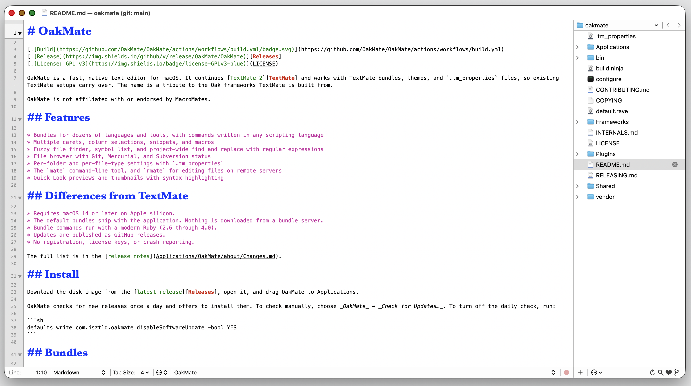

A fast, native text editor for macOS!!!

^^^ Actual screenshot!! Click here for the FULL SIZE version (warning: big file, AirPort users beware) ^^^
Clean, native, a little bit 2010. No Electron. No sidebar full of AI.
Good news: it never went away. It just needed someone to keep it alive. →
OakMate is a fast, native text editor for macOS. It continues TextMate 2 and works with TextMate bundles, themes, and .tm_properties files, so your existing TextMate setup carries right over.
The name is a tribute to the Oak frameworks TextMate is built from.
>> DOWNLOAD NOW <<
It's FREE!! | .dmg disk image | Just drag it to Applications
OakMate checks for new releases once a day and offers to install them. Turn it off like a true hacker:
you@macbook ~ % defaults write com.isztld.oakmate disableSoftwareUpdate -bool YES
You need an Apple silicon Mac on macOS 14+, Xcode, and ninja (brew install ninja).
you@macbook ~ % git clone https://github.com/OakMate/OakMate.git you@macbook ~ % cd OakMate you@macbook OakMate % ./configure && ninja OakMate/run
>_ SOURCE
ON GITHUB
GNU GPL
v3 OR LATER
MADE ON A
MAC
*** BUNDLES
WELCOME
NO LICENSE
KEYS!!
VALID
HTML 4.01?
You are visitor number 000000
[ << Prev | TextMate Webring | Next >> ]
OakMate is a modified version of TextMate, copyright MacroMates Ltd. and contributors.
Free software under the GNU GPL, version 3 or later.
OakMate is not affiliated with or endorsed by MacroMates. TextMate is a trademark of Allan Odgaard.
Last updated: today · Page hand-coded in OakMate, obviously.